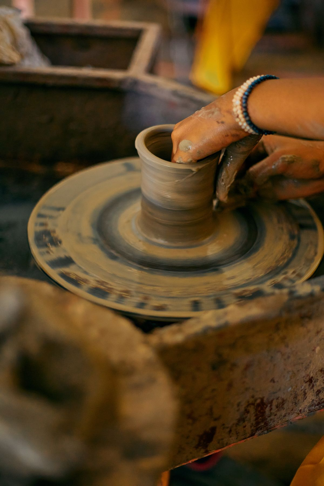

Roda para iniciantes
Do centramento do barro ao primeiro cilindro. Você aprende a base do torno e sai com as primeiras peças que fizer — mesmo que saiam tortas, e elas saem.
- 4 encontros
- Até 6 pessoas
- Barro incluso
Valores sob consulta pelo WhatsApp. Novas turmas abertas ao longo do mês.